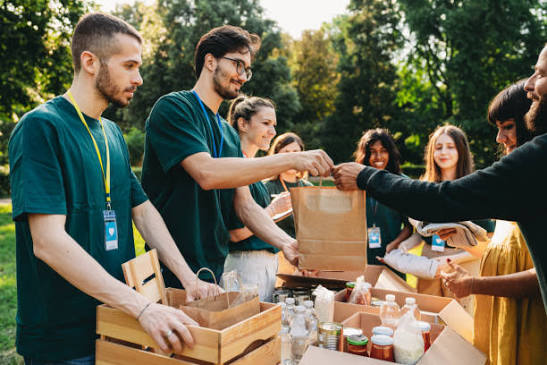

PlateShare connects food donors with local NGOs in minutes. Post surplus, claim what your community needs, and keep perfectly good food on the table.
No sign-up needed to explore. Try both portals right now.
Three simple steps move surplus food from where it is to where it's needed most.
Caterers, hotels, messes and event organizers list food they can't use, with the quantity and a pickup deadline.
Organizations browse the available donations and filter by category and how much time is left.
One click reserves the listing so nobody else takes it. Then the NGO picks it up before the food expires.